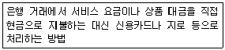
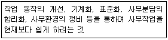
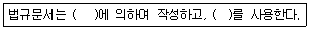
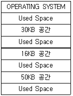
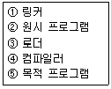
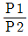
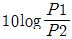
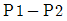
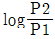

사무자동화산업기사 (2016-10-01 기출문제)
1과목: 사무자동화 시스템
1. 프로그램의 실행 중 인터럽트(Interrupt)가 발생할 경우에 현재의 프로그램 상태가 저장되어 있는 레지스터를 무엇이라 하는가?
- PSW
- PC
- PCW
- ACC
(정답률: 67%)

2. 컴퓨터 시스템에서 중앙처리장치와 각각의 입, 출력장치가 서로 독립적으로 작동하는 것으로 처리할 데이터를 디스크에 저장하고 이것을 다른 장치가 이용하도록 하는 것은?
- Spooling
- Multiplexer
- Buffering
- DASD
(정답률: 75%)
3. 사무자동화의 특징으로 가장 거리가 먼 것은?
- 사무자동화 도입으로 인건비 및 관리비의 감소를 도모할 수 있다.
- 사무자동화는 CEO의 의사결정이 궁극적 목표이다.
- 맨-머신 인터페이스이다.
- 주로 비구조적인 과제를 지원한다.
(정답률: 69%)
4. 컴퓨터 시스템에 사용되는 메모리에 대한 설명으로 가장 거리가 먼 것은?
- 캐시메모리는 CPU와 기억장치 간의 속도 차를 해소하기 위한 메모리이다.
- RAM은 일반적으로 주 기억 메모리(Main Memory)로 사용되며, 휘발성이 없다.
- 가상메모리는 보조기억장치의 일부를 주기억장치처럼 사용하기 위한 메모리이다.
- 버퍼메모리는 2개의 장치가 데이터를 주고받을 때 두 장치 간의 속도 차를 해소하기 위한 장치이다.
(정답률: 80%)
5. 특정 기업 간의 CALS 및 EDI를 통한 수주, 구매, 조달 및 납품 등과 관련 되어 기업 간의 전자상거래를 의미하는 용어로 가장 적합한 것은?
- B2C
- B2B
- C2C
- C2G
(정답률: 87%)
6. 다음에서 사무자동화 정의와 관계없는 사람은?
- Michael D. Zisman
- Vincent Lum
- Hammer Sibru
- Wilson Magnus
(정답률: 60%)
7. 다음 중 EDI 국제표준은?
- UN/EDIFACT
- TDCC
- UCS
- WINS
(정답률: 87%)
8. 사무자동화의 배경 요인 중 사회적 요인에 가장 거리가 먼 것은?
- 정보화 사회의 출현으로 사무실에서 처리해야 할 정보의 양이 증가하였다.
- 단순 노동보다는 지적 노동이 부각화 되었다.
- 생산부문의 합리화, 자동화에 부응하여 오피스에 대한 관심의 증가로 인해 기업 구조가 변화하였다.
- 이미지, 소리, 그래픽과 같은 멀티미디어 기술의 등장으로 다양한 형태의 정보처리가 가능하게 되었다.
(정답률: 80%)
9. 다음 중 원격회의 시스템에 대한 설명으로 가장 옳지 않은 것은?
- 멀리 떨어진 지역의 회의실을 화상과 음성통신 기술을 통해 연결하여 화면을 보면서 회의하는 시스템이다.
- 원격회의 시스템은 약자로 VCS라고도 한다.
- 대부분 음성 및 영상을 Simplex 전송방식을 사용한다.
- 물리적 이동에 따르는 시간과 경비를 줄일 수 있다.
(정답률: 80%)
10. 정보보안의 측면에서 전자상거래 시스템 구축을 위한 기본적 충족 요건이 아닌 것은?
- Confidentiality
- Efficiency
- Integrity
- Availability
(정답률: 53%)
11. 사무자동화가 추구하는 목적과 가장 거리가 먼 것은?
- 사무부문의 생산성 향상
- 효과적인 정보관리
- 사무 처리의 비용 절감
- 사무실의 무인화 및 사무원의 부속품화
(정답률: 86%)
12. 종래의 자료 처리 기술로는 다루기 어렵고 데이터의 양이 많으면서도 그 구조가 불명확한 모든 사무 업무에 대하여 컴퓨터 기술, 통신 기술, 시스템 공학, 행동 과학 등을 적용한 학문으로 사무자동화를 정의한 인물은?
- Steve Jobs
- Bill Gates
- Michael D. Zisman
- Vincent Lum
(정답률: 81%)
13. 중앙처리장치의 구성요소가 아닌 것은?(문제 오류로 실제 시험당일에는 4번으로 정답이 발표 되었지만 확정답안 발표시 1, 4번이 정답 처리 되었습니다. 여기서는 4번을 누르면 정답 처리 됩니다.)
- 주기억장치
- 연산장치
- 제어장치
- 입·출력장치
(정답률: 88%)
14. 자기 디스크의 구성요소에 대한 설명으로 가장 거리가 먼 것은?
- 트랙은 회전축을 중심으로 데이터가 기록되는 동심원이다.
- 실린더는 여러 장의 디스크 판에서 같은 위치에 있는 트랙의 모임으로 트랙의 수와 실린더의 수는 동일하다.
- Search Time은 읽기/쓰기 헤드가 지정된 트랙에 도달하는데 걸리는 시간이다.
- Transmission Time은 읽은 데이터를 주기억장치로 보내는데 걸리는 시간이다.
(정답률: 70%)
15. 다음 중 주기억장치에 기억되어 있는 명령어를 호출하여 중앙처리장치로 가져오도록 하는 명령어 호출 사이클은?
- Interrupt cycle
- Fetch cycle
- Execution cycle
- Indirect cycle
(정답률: 52%)
16. 다음 설명에 해당하는 전자상거래 관련 용어는?

- EDI
- EFT
- CALS
- CRM
(정답률: 57%)
17. 다음 중 출력장치에 해당하지 않는 것은?
- Printer
- Plotter
- Digitizer
- CRT
(정답률: 71%)
18. 다음 중 데이터의 접근 속도가 가장 빠른 장치는?
- SSD
- Harddisk
- CD-ROM
- DVD ROM
(정답률: 85%)
19. 다음 중 COM(Computer Output Microfilm)의 장점이 아닌 것은?
- 그래픽 이미지를 수록할 수 있다.
- 충격식 프린터에 대체되어 고속인쇄가 가능하다.
- 촬영에서부터 현상까지의 시간이 짧아서 효과적이다.
- 충격식 프린터에 비하여 비용절감 효과가 있다.
(정답률: 53%)
20. 그룹웨어의 구성요소로 가장 관계가 없는 것은?
- 서버
- 클라이언트
- 네트워크
- FAX
(정답률: 87%)
2과목: 사무경영관리 개론
21. 다음 설명에 가장 부합하는 사무 관리의 원칙은?

- 경제성
- 정확성
- 신속성
- 용이성
(정답률: 82%)
22. 다음 중 페이욜(H.Fayol)이 주장한 관리의 고유 기능의 활동 범주에 속하지 않는 것은?
- Accounting
- Technical
- Financial
- Audit
(정답률: 56%)
23. 문서 기안 시 발의자와 보고자의 표시를 생략할 수 있는 문서가 아닌 것은?
- 검토나 결정이 필요하지 아니한 문서
- 회의록
- 각종 증명 발급
- 수신자에게 전달된 전자문서
(정답률: 61%)
24. 산업안전보건기준에 관한 규칙의 사무실 공기관리와 작업 기준 등에서 제651조 미생물오염관리의 조치사항에 해당하지 않는 것은?
- 누수 등으로 미생물의 생장을 촉진할 수 있는 곳을 주기적으로 검사하고 보수할 것
- 1년마다 사무실 소재지 관할 구청의 검사 및 관리 감독을 받을 것
- 미생물이 증식된 곳은 즉시 건조, 제거 또는 청소할 것
- 건물 표면 및 공기정화설비 등에 오염되어 있는 미생물은 제거할 것
(정답률: 76%)
25. 다음 중 MIS(경영정보시스템)에 대한 설명으로 가장 거리가 먼 것은?
- MIS는 기업의 전략, 계획, 조정, 관리, 운영 등의 결정을 보조하는 특징을 갖고 있다.
- MIS는 창조적이고 지적인 공학적 설계와 관계없이 프로그래밍을 통한 업무 전산화를 말한다.
- MIS의 전문성은 기업의 업무를 분석하고 기업경영을 진단하는 능력이다.
- MIS는 분석과 진단에 의해 기업업무의 정보요구가 정의되어야 하고, 정의된 정보를 효율적으로 처리할 수 있는 시스템을 개발하고 관리하는 특징을 갖고 있다.
(정답률: 78%)
26. 행정 효율과 협업 촉진에 관한 규정(구. 행정업무의 효율적 운영에 관한 규정) 시행규칙의 제4조 기안문의 구성에 관한 사항으로 옳지 않은 것은?
- 기안문을 별지 제1호 서식으로 작성하는 경우 기안문은 서론, 본론, 결론으로 구성한다.
- 행정기관명에는 그 문서를 기안한 부서가 속하는 행정기관을 표시하되, 다른 행정기관명과 동일한 경우에는 바로 위 상급기관명을 함께 표시할 수 있다.
- 수신란에 수신자가 없는 내부결재문서인 경우 ‘내부결재’로 표시한다.
- 문서에 다른 서식 등이 첨부되는 경우 본문의 내용이 끝난 줄 다음에 ‘붙임’ 표시를 한다.
(정답률: 52%)
27. 듀이 십진분류법(DDC)에서 기술과학에 해당하는 코드는?
- 200
- 400
- 600
- 800
(정답률: 72%)
28. 다음 중 Tickler System, Come up System이 속하는 사무 관리의 관리 수단 체계는?
- 사무계획
- 사무조직
- 사무조정
- 사무통제
(정답률: 67%)
29. 사무 관리의 개념에 대한 설명으로 가장 옳지 않은 것은?
- 헨리(Henry)는 사무 관리를 눈에 보이지 않는 힘으로 기업의 목적 달성을 위하여 지휘, 통제하는 행위로 정의했다.
- 사무실의 사무작업을 효과적으로 수행하여 기업의 목표를 달성하도록 관리하는 것이다.
- 조직의 운영에 필요한 유용한 정보를 효율적으로 관리하는 것을 의미한다.
- 사무 관리에서 가장 중점을 두는 것은 능률이다.
(정답률: 58%)
30. 다음 중 집무환경의 중요한 요소와 가장 거리가 먼 것은?
- 색채조절
- 소음조절
- 시간조절
- 공기조절
(정답률: 74%)
31. 현대적(과학적) 사무 관리의 3S에 해당하지 않는 것은?
- Standardization
- Simplification
- Simulation
- Specialization
(정답률: 79%)
32. 다음 중 자료 관리에 대한 설명으로 가장 옳지 않은 것은?
- 자료의 자연 증가를 통제할 수 있다.
- 자료처리에 따르는 경비를 절감할 수 있다.
- 자료를 서식화할 수 있다.
- 자료를 필요로 하는 곳에 신속하게 전달할 수 있다.
(정답률: 59%)
33. 다음 중 사무실 배치 원칙과 가장 거리가 먼 것은?
- 사무의 성격이 유사한 부서는 가깝게 배치한다.
- 내부 및 외부 민원 업무 등 대중과 관계가 많은 부서는 가급적 입구근처에 배치한다.
- 대실주의(큰방주의)는 사무실 배치에 있어서 가능한 독방을 늘인다.
- 장래확장에 대비하여 탄력성 있는 공간을 확보한다.
(정답률: 85%)
34. 기록물 관리의 원칙으로 공공기관 및 기록물관리기관의 장은 기록물의 생산부터 활용까지의 모든 과정에 걸쳐 관리할 때의 원칙으로 옳은 것은?
- 진본성, 무결성, 신뢰성
- 진본성, 무결성, 보관성
- 진본성, 공개성, 신뢰성
- 영구성, 무결성, 신뢰성
(정답률: 74%)
35. 암호화 등의 문서 발신방법을 지정한 경우의 조치로 옳은 것은?
- 문서 두문의 마지막에 ‘암호’ 등으로 발신할 방법을 표시
- 문서 본문의 마지막에 ‘암호’ 등으로 발신할 방법을 표시
- 문서 두문의 시작에 ‘암호’ 등으로 발신할 방법을 표시
- 문서 본문의 시작에 ‘암호’ 등으로 발신할 방법을 표시
(정답률: 56%)
36. 사무실을 너무 세분화하는 것보다는 여러 과를 한 사무실에 배정하여 사용하는 것이 바람직하다고 생각하는 사무실의 배정 방식은?
- 대사무실주의 배치
- 관련 부서의 인근 배치
- 업무처리 흐름에 따른 직선적 배치
- 실무자 중심의 사무실 배치
(정답률: 74%)
37. 다음 ( )에 가장 적합한 내용을 순서대로 나열한 것은?

- 시행문형식, 일자별 일련번호
- 시행문형식, 누년 일련번호
- 조문형식, 일자별 일련번호
- 조문형식, 누년 일련번호
(정답률: 55%)
38. 자료의 내용을 요약, 정리한 것으로 이용자가 원문 참조를 해야 할 것인가의 여부를 정하는 지침이 되는 것을 무엇이라 하는가?
- Abstract
- Index
- List
- Footnote
(정답률: 49%)
39. 전자기록물의 저장, 이관, 백업, 복원, 보존 등을 위한 기록매체 및 장치가 준수하여야 할 사항으로 가장 옳지 않은 것은?
- 전자기록물을 정확하고 신뢰성 있게 수록 및 재생할 수 있어야 한다.
- 전자기록물을 현재의 저장환경으로부터 새로운 저장환경으로 손상 없이 옮길 수 있어야 한다.
- 다른 매체로 복제본 제작이 가능하여야 한다.
- 수록된 전자기록물을 임의 수정, 삭제, 위조, 변조 등으로부터 물리적으로 보호할 수 있어야 한다.
(정답률: 76%)
40. EDIFACT의 구성요소에서 3가지 기본요소가 아닌 것은?
- 문법과 구문규칙
- 데이터 엘리먼트 디렉토리
- 표준 메시지
- 코드집
(정답률: 72%)
3과목: 프로그래밍 일반
41. 사용자가 작성한 소스코드를 실행하면서 오류 등을 찾기 위한 프로그램의 명칭으로 가장 옳은 것은?
- Emulator
- Linkage Editor
- SPI
- Debugger
(정답률: 82%)
42. 프로그래밍 언어에서 시스템이 알고 있는 특수한 기능을 수행하도록 이미 용도가 정해져 있는 단어로서, 프로그래머가 변수 이름이나 다른 목적으로 사용할 수 없는 것은?
- Array
- Constant
- Reserved Word
- Pointer
(정답률: 54%)
43. 주석(Comment)의 제거, 상수 정의 치환, 매크로 확장 등 컴파일러가 처리하기 전에 먼저 처리하여 확장된 원시 프로그램을 생성하는 것은?
- Cross compiler
- Loader
- Preprocessor
- Linker
(정답률: 72%)
44. 시스템 프로그래밍에 가장 적합한 언어는?
- C
- COBOL
- Fortan
- Pascal
(정답률: 87%)
45. BNF 표기법에서 기호 ‘∷=’의 의미는?
- 선택
- 정의
- 생략
- 반복
(정답률: 88%)
46. 표준 C 언어에서 저장 클래스를 명시하지 않은 변수는 기본적으로 어떤 변수로 간주하는가?
- AUTO
- REGISTER
- STATIC
- EXTERN
(정답률: 61%)
47. 작성된 표현식이 BNF의 정의에 의해 바르게 작성되었는지를 확인하기 위해 만들어진 tree는 무엇인가?
- parse tree
- binary search tree
- binary tree
- skewed tree
(정답률: 83%)
48. 프로그래밍 언어의 구문분석 기법에서 파스트리의 루트(Root)로부터 시작하여 파스트리를 만들어 가는 파싱 기법은?
- Universal Parsing
- Bottom-up Parsing
- Top-Down Parsing
- LL Technique
(정답률: 55%)
49. 다음과 같은 기억장소에서 15KB를 요구하는 프로그램이 50KB 공백의 작업공간에 배치될 때의 기억장치 배치 전략은?

- First Fit
- Best Fit
- Worst Fit
- Top Fit
(정답률: 84%)
50. 변수의 속성에서 프로그램 수행 중 변경될 수 있는 것은?
- Type
- Location
- Value
- Name
(정답률: 69%)
51. 부프로그램(subprogram) 사용의 특징에 해당하지 않는 것은?
- 시스템 설계 시 효율적이다.
- 가독성 및 유지, 보수가 편리하다.
- 프로그램이 커지므로 기억장소를 많이 필요하게 된다.
- 프로그래머는 동일한 프로그램을 한 번만 작성해서 필요시 호출하여 사용이 가능하다.
(정답률: 62%)
52. 구조적 프로그램의 기본 구조가 아닌 것은?
- 순차구조
- 반복구조
- 일괄구조
- 선택구조
(정답률: 65%)
53. 표준 C언어에 대한 설명으로 가장 옳지 않은 것은?
- 수행속도가 빠르고 크기 및 효율 등의 기능면에서 고급언어와 어셈블리어의 중간기능을 수행한다.
- 융통성을 중요시하는 Interpreter 언어의 범주이다.
- 1970년대 초 AT&T 사의 벨연구소에서 UNIX OS 개발을 위해 제작한 언어가 시초가 되었다.
- 시스템 소프트웨어 작성이 용이한 언어이다.
(정답률: 50%)
54. 1. 중위 표기법(Infix notation)으로 표현된 산술식 “X=A＋C/D”를 전위 표기법(Prefix notation)으로 옳게 나타낸 것은?
- =X＋A/CD
- =＋/XACD
- /CD＋A=X
- XACD/＋=
(정답률: 71%)
55. 프로그램이 동작하는 동안 고정되어 있는 값 또는 공간을 의미하는 것은?
- Variable
- Record
- Constant
- Pointer
(정답률: 66%)
56. 기계어에 대한 설명으로 가장 옳지 않은 것은?
- 0 또는 1로만 구성되어 있다.
- 컴퓨터가 이해하는 언어이다.
- 프로그램 작성이 용이하다.
- 처리 속도가 빠르다.
(정답률: 73%)
57. 일반적인 컴파일러 기반 프로그래밍 언어로 작성한 프로그램의 수행 순서를 옳게 나열한 것은?

- ②→④→⑤→①→③
- ⑤→④→②→①→③
- ②→③→④→①→⑤
- ④→①→③→②→⑤
(정답률: 76%)
58. 객체지향 개념에서 이미 정의되어 있는 상위 클래스(슈퍼 클래스 혹은 부모 클래스)의 메소드를 비롯한 모든 속성을 하위 클래스가 물려받는 것을 무엇이라 하는가?
- Abstraction
- Method
- Inheritance
- Message
(정답률: 80%)
59. 어휘 분석의 주된 역할은 원시 프로그램을 하나의 긴 스트링으로 보고 문자 단위로 스캐닝하여 문법적으로 의미 있는 일련의 문자들로 분할해 내는 것이다. 이때 분할된 문법적인 단위를 무엇이라고 하는가?
- Token
- Parser
- BNF
- Pattern
(정답률: 83%)
60. C 언어의 FOR 문, COBOL 언어의 PERFORM문에 해당하는 것은?
- 반복문
- 종료문
- 입출력문
- 선언문
(정답률: 70%)
4과목: 정보통신 개론
61. 프로토콜 구성요소에 해당하지 않는 것은?
- syntax
- semantics
- parameter
- timing
(정답률: 63%)
62. 데이터 통신에서 오류가 검출되면 자동으로 송신스테이션에게 재전송을 요청하는 ARQ 방식의 종류가 아닌 것은?
- Stop-and-Wait ARQ
- Control-Data ARQ
- Go-back-N ARQ
- Selective-Repeat ARQ
(정답률: 64%)
63. 다음 중 전송로상의 두 지점인 P1과 P2 간의 상대적인 신호의 세기를 dB로 표현한 것으로 가장 옳은 것은?




(정답률: 62%)
64. 다음 중 뉴미디어의 특징과 가장 거리가 먼 것은?
- 고속성
- 상호작용성
- 쌍방향성
- 획일성
(정답률: 82%)
65. 비트율이 14,400[bps]인 64-QAM 신호의 보오율은 얼마인가?
- 1200 baud
- 2400 baud
- 4800 baud
- 7200 baud
(정답률: 59%)
66. 전자기기 등에 네트워크 접속의 기능을 갖추어 거시적으로 사물 간의 네트워크를 구현할 수 있는 기술을 의미하는 용어로 가장 옳은 것은?
- IoT
- FTTH
- Router
- VDSL
(정답률: 78%)
67. ISDN 채널 구조에서 기본 속도인 BRI(Basic Rate Interface)는 무엇인가?
- 2B＋D
- B＋D
- 23B＋2D
- 23＋D
(정답률: 68%)
68. OSI 7 계층 참조모델 중 데이터링크 계층의 주요기능에 해당되지 않는 것은?
- 데이터 링크의 설정과 해지
- 경로 설정
- 오류검출 및 정정
- 흐름제어
(정답률: 46%)
69. LAN의 토폴로지 형태로 가장 적절하지 않은 것은?
- Star Topology
- Bus Topology
- Ring Topology
- Square Topology
(정답률: 84%)
70. 데이터 전송에서 1차원 Parity에 대한 설명으로 가장 적합한 것은?
- 수신된 데이터에서 전송 오류를 무시한다.
- 수신된 데이터에서 전송 오류의 검출을 수행한다.
- 수신된 데이터에서 전송 오류의 정정을 수행한다.
- 수신된 데이터에서 전송 오류의 암호화를 수행한다.
(정답률: 74%)
71. ITU-T에 의해 개발된 유명한 표준으로서, 공중 디지털 네트워크를 통한 전송을 규정한 것은?
- 802 프로젝트
- V 시리즈
- X 시리즈
- Z 시리즈
(정답률: 72%)
72. 다음 중 데이터 단말기의 제어 기능과 가장 거리가 먼 것은?
- 입출력 제어
- 다중화 제어
- 송수신 제어
- 에러 제어
(정답률: 53%)
73. 패킷망에서 데이터의 양이 적고, 융통성이 요구되는 경우에 가장 적합한 교환방식은?
- 회선 다중통신(Circuit Multiplexing)
- 가상회선(Virtual Circuit)
- 메시지 교환(Message Switching)
- 데이터그램(Datagram)
(정답률: 52%)
74. IEEE 802 표준규격으로서 광대역 LAN을 규정한 것은?
- 802.5
- 802.6
- 802.7
- 802.8
(정답률: 45%)
75. 다음 중 데이터 통신 장비 또는 장치에 속하지 않는 것은?
- MODEM
- AVR
- NIC
- DSU
(정답률: 56%)
76. 광섬유의 특징에 대한 설명 중 잘못된 것은?
- 아주 빠른 전송속도를 가지고 있다.
- 넓은 대역폭을 가지며 외부 간섭의 영향을 받는다.
- 매우 낮은 전송 에러율을 가지고 있다.
- 네트워크 보안성이 높다.
(정답률: 66%)
77. 종합정보통신망에 해당하는 용어는?
- ISDN
- LAN
- VAN
- WAN
(정답률: 70%)
78. 문자 위주 동기전송에서 문자 동기를 나타내는 전송 제어 문자로 맞는 것은?
- SYN
- SOH
- ETX
- ENQ
(정답률: 62%)
79. 주파수분할다중화(FDM) 방식에서 보호대역(guard band)이 필요한 이유는?
- 인접한 채널 사이의 간섭을 방지하기 위해서다.
- 주파수 대역폭을 조정하기 위해서다.
- 좁은 주파수 대역에 많은 채널을 쓰기 위해서다.
- 신호의 세기를 적게 하기 위해서이다.
(정답률: 82%)
80. IEEE 802.15 기술은 WPAN(무선 개인 영역 네트워크)을 의미한다. WPAN 영역에 해당하지 않는 것은?
- WiFi
- Bluetooth
- ZigBee
- UWB
(정답률: 51%)